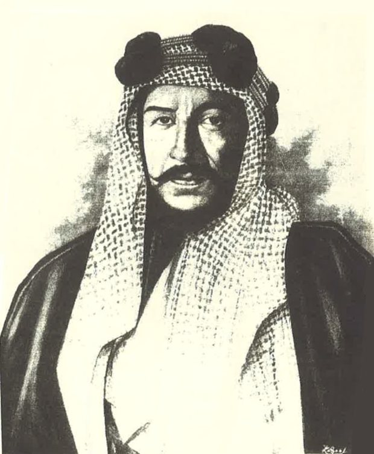
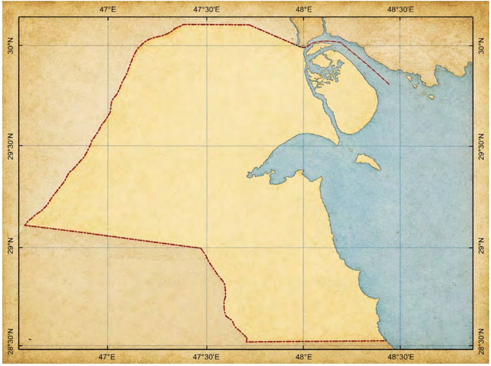

يتميز علم التاريخ بخصائص تبرز طبيعته في دراسة الأحداث وتحليلها، ومن أبرزها:
ليتحقق من الأحداث الماضية
تحليل الأحداث واستنتاج الأدلة لفهمها بصورة أعمق
لفهم التغيير والتطور عبر العصور
تتجلى أهمية دراسة علم التاريخ في إسهامه في تنمية وعي الإنسان بذاته ومجتمعه، ومن أبرز جوانب هذه الأهمية:
استخلاص الدروس من خبرات وتجارب الأمم السابقة وما حققته من نجاحات وما واجهته من تحديات وربطها بالقضايا المعاصرة.
تعزيز الهوية الوطنية وترسيخ انتماء الفرد وارتباطه بوطنه من خلال التعرف إلى منجزاته الحضارية.
تنمية مهارات التفكير لفهم القضايا المختلفة بصورة أعمق بما يدعم اتخاذ قرارات أكثر وعياً في الحاضر والمستقبل.

